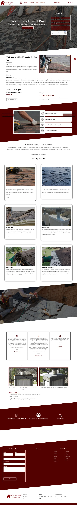
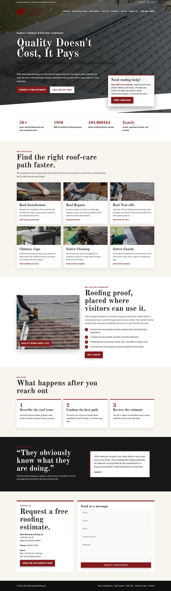
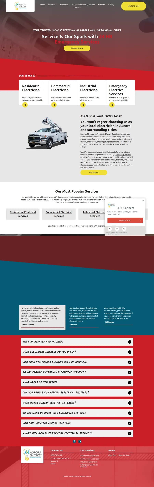
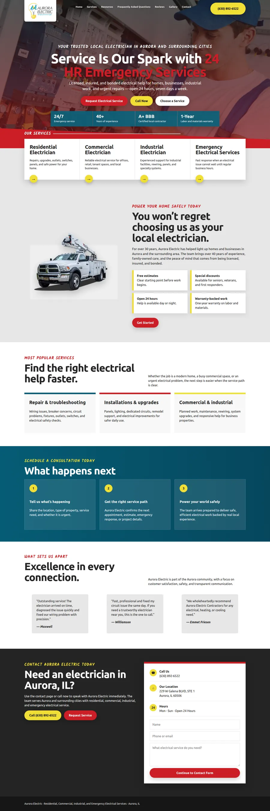
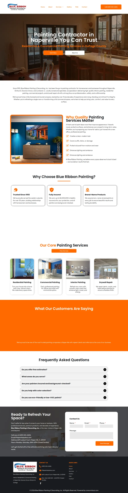
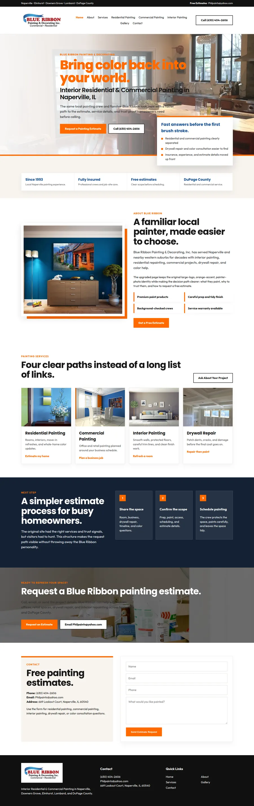

Able-Warnecke Roofing
Structural cue check: Roof-photo/maroon/serif/diagonal-divider rhythm remains the skeleton.


Testing the new guardrail: original site DNA must survive as layout skeleton, not just logo/color/image decoration.
Structural cue check: Roof-photo/maroon/serif/diagonal-divider rhythm remains the skeleton.


Structural cue check: Red/yellow/truck/angled-band and overlapping-card rhythm remains the skeleton.


Structural cue check: Tall white header, oversized logo, dense nav, painter-at-house hero, orange CTA, and gallery/service rhythm now drive the skeleton.

